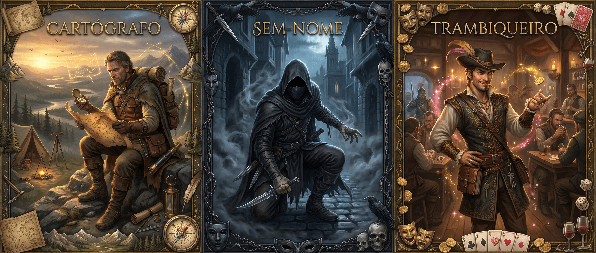

Batedor

"Desde pequeno, você era curioso… curioso demais para o gosto dos adultos. Onde outros enxergavam perigo, você enxergava caminhos."
Onde todos recuavam, você avançava — não por coragem ingênua, mas por um instinto silencioso que sempre te guiou através da mata fechada, dos becos tortuosos e dos territórios proibidos.
⚔️ Treinamento
Você começa treinado em: Armas à Distância, Sobrevivência, Percepção
Escolha (1 + Mod. Inteligência) perícias: Crime, Religião, Iniciativa, Medicina, Furtividade
📊 Status Iniciais
❤️ Saúde
(1 × Nível) + (Mod.CON × Nível × 3)
⚡ Stamina
(3 × Nível) + ([Mod.FOR+Mod.DES/2] × Nível × 5)
✨ Éter
(2 × Nível) + ([Mod.INT+Mod.SAB/2] × Nível × 3)
🛡️ Evasão Ativa
12 + Mod.Des + Prof.Defender + 1d10
🛡️ Evasão Passiva
12 + Mod.Destreza
📈 Progressão
| Nível | Conteúdo |
|---|---|
| 1 | 3 Técnicas |
| 2 | 4 Técnicas, Técnica de Ramo (Tier 1) |
| 3 | 5 Técnicas, 1 Marca |
| 4 | 6 Técnicas, Técnica de Ramo (Tier 1, 2), 2 Marcas |
| 5 | 7 Técnicas, Técnica de Ramo (Tier 1, 2 e 3), 3 Marcas |
⚡ Técnicas
Toda classe possui técnicas, você pode reatribuí-las livremente ao realizar um descanso longo. Você possui 3 Técnicas + Nível.
Atento
Você é imune a condição Desprevenido.
Passo Ciente
Você não ativa armadilhas de quaisquer tipo e ignora terreno difícil.
Caçador
Você consegue distinguir peso, número da pegada, velocidade e direção de criaturas vendo rastros passivamente.
Líder
Você memoriza caminhos e traça trajetos eficientes. +1 ao sucesso do grupo em jornadas já percorridas. +5 em Sobrevivência em jornadas.
Terreno Ideal
Adapta-se a um ambiente recebendo: +2 em Sobrevivência e Percepção. Pode gastar 1 ação para rolar com vantagem. Terrenos: Urbano, Natural, Naval, Subterrâneo. Escolha 1 no nível 1, 2 no nível 3 e 3 no nível 5.
Língua Prateada
Treinado em Interação Social(Convencimento). Ao suceder em teste contra comerciante, garante 25% de desconto em um item.
Oportunista
Seu próximo ataque causa +1d8 de dano se o alvo estiver Desprevenido.
Curioso
Ao realizar um teste de Percepção ou Investigação adicione 1d4+Destreza.
Emboscada
Prepara local com armadilhas e distrações (Sobrevivência ou Furtividade). Se inimigo falhar em Percepção contra seu teste: você e aliados recebem +2 em Atacar durante todo o combate e inimigos ficam Desprevenidos na primeira rodada.
Armadilha Tática
Configura armadilha no chão (Furtividade ou Sobrevivência). Inimigo que passar deve superar com Percepção ou recebe 2d6+Mod.Des de dano Perfurante e fica Enraizado por 1 rodada.
Mãos Rápidas
Reduz penalidade por ataques consecutivos em -2 durante esse turno (de -5 para -3 e -10 para -8).
Sigiloso
Ao atacar estando furtivo, pode gastar reação para continuar furtivo ao suceder em Furtividade contra Percepção do alvo.
Fantasma
Ao ser atacado pode rolar sua Defesa como se fosse sua Furtividade. Sua rolagem de Furtividade se torna sua evasão.
Saque
Ao eliminar uma criatura, pode saqueá-la, ganhando 1d4 + (Nível × 2) de Dinheiro.
Ocultar-se
Ao estar fora da linha de visão de todas as criaturas, pode se esconder com 1 ação ao invés de 2.
🌿 Ramos
Os ramos são caminhos, características únicas do seu personagem. Diferente das técnicas, são irreversíveis.
Marcas de Ramo: Que construiu ao longo da sua vida, moldando sua PERSONALIDADE.
Técnicas de Ramo: Que aprendeu ao longo do seu treinamento definindo seu ESTILO DE AGIR.
É extremamente aceitável que você misture os 3 ramos. Ao longo da criação você escolherá: 3 Marcas e 6 Técnicas de Ramo (3 por Tier).
🗺️ Ramo do Cartógrafo
Estar em um local desconhecido é o que te cativa e mapeá-lo é como você expressa sua arte. Você vive pela emoção de descobrir coisas novas e suas aventuras te trouxeram ensinamentos de sobrevivência valiosos.
💰 Ramo do Trambiqueiro
Viajar o mundo custa caro e você faz questão de pagar esse preço. Ao longo de suas aventuras você sempre esteve de olho em bugigangas compráveis, a lábia de comerciante veio naturalmente após isso.
🗡️ Ramo do Sem-Nome
Ninguém lembra do seu rosto e é assim como você prefere. O capuz caiu sobre sua cabeça pela primeira vez para se proteger do sol, mas, com o tempo, tornou-se algo maior: um abrigo, um disfarce, uma segunda pele.
🔥 Marcas de Ramo
🗺️ Marcas do Cartógrafo
Colecionador de Horizontes
Você anseia por novos lugares e busca ativamente explorar o desconhecido.
Ao mapear um lugar significativo pela primeira vez (Cidade, Ruína, Bioma…), recupera 2 de Stamina e ganha 1 de Stamina máxima.
O lugar deve possuir características únicas que você nunca mapeou antes. Por exemplo: o subúrbio de uma cidade e a área rural dessa mesma cidade, apesar de terem paisagens diferentes, contam como um único lugar por serem próximos e possuírem elementos geográficos parecidos.
Cicatrizes da Jornada
Você possui cicatrizes que reforçam suas histórias de viagem.
Para cada Jornada de Hostilidade 10+ que você completou, ganha +1 permanente em Sobrevivência. Ao chegar em +5, essa habilidade fica supérflua.
Ao falhar em um teste de Sobrevivência, pode escolher perder 2d6 de Stamina para transformar em sucesso.
🗡️ Marcas do Sem-Nome
Coleção de Últimos Suspiros
Você sente prazer em assassinar criaturas sem que elas te reconheçam.
Para cada 5 criaturas que você matou enquanto estava Escondido, ganha +1 permanente em Furtividade. Ao chegar em +5, essa habilidade fica supérflua.
Ao matar uma criatura sem ser detectado, recupera 1 de Stamina.
Sussurro Final
Você sabe interrogar pessoas como ninguém.
Você fica treinado em Interação Social (Convencimento).
Ao matar uma criatura em combate corpo a corpo, pode fazer uma pergunta que ela responde com verdade antes de morrer. A resposta é breve (uma frase) e literal.
💰 Marcas do Trambiqueiro
Homem de Negócios
Você possui um instinto natural para negócios.
Para cada 5 negociações bem-sucedidas que resultaram em vantagem significativa, ganha +1 permanente em Interação Social (Convencimento). Ao chegar em +5, essa habilidade fica supérflua.
Ao ajudar alguém de forma significativa, pode declarar que a pessoa "te deve uma". O mestre registra. Você pode cobrar depois.
O Palpite
Ao passar ao menos 1 minuto analisando uma criatura, pode diagnosticar um segredo dela. Esse segredo possui 50% de chance de ser verdade e você não sabe disso.
Ao rolar um teste de Interação Social (qualquer) contra ela pode utilizar esse segredo como ferramenta: caso seja verdade você rola com vantagem, caso seja mentira você rola com desvantagem.
⚡ Técnicas de Ramo
Tier 1
Nível 2+🗺️ Cartógrafo
Desenhar Mapa de Exploração
Descanso Curto, 5 StaminaVocê pode mapear locais previamente transitados, até um tamanho máximo de até 1 quilômetro quadrado. Recebendo os seguintes benefícios ao estar neste local:
- Tem conhecimento geral da geografia da área. +2 em testes de jornada.
- +2 Percepção e Sobrevivência
- Ao descansar na natureza pode indicar locais ideais para descanso, recebendo +5 no teste de Sobrevivência de descanso longo.
Artista Apaixonado
PassivaOs mapas que você fabrica contam como mercadoria Incomum.
Escapista
3 Ações, 5 StaminaVocê nunca foi acostumado a batalhar, na verdade planejar uma rota de fuga é sua especialidade.
Ao possuir um mapa da região em que está batalhando, pode fugir e guiar outros a fugirem do combate sem uma cena de perseguição ao suceder em um teste de Sobrevivência (CD 15).
🗡️ Sem-Nome
Golpe Sombrio
1 Ação, 2 StaminaEnquanto estiver Escondido, seu próximo ataque:
- Ignora 1 de Evasão
- +1d6 de Dano
- Não pode ser retaliado
Finta
1 Ação, 2 StaminaEscolha um alvo em até 1,5m: Enganação vs Percepção.
Sucesso: alvo fica Desorientado por 1 rodada.
Olhar de Brecha
PassivaVocê detecta instantes onde inimigos abaixam guarda ou se distraem.
- Você recebe vantagem no primeiro teste de Furtividade do combate.
- Se já estiver escondido no primeiro turno de combate, recebe +2 em Iniciativa.
💰 Trambiqueiro
Bens Diversos
1 Ação, 5 StaminaVocê busca na sua mochila por um objeto que possa te ajudar na realização de um teste de perícia qualquer. Role d100:
| 1 | Machuca sua mão (1d6 dano cortante). Como isso foi parar aí? |
| 2-19 | Objeto qualquer, não ajuda em quase nada. |
| 20-39 | Objeto utilizável, não tão adequado. +1 na perícia. |
| 40-59 | Objeto conveniente. +2 na perícia. |
| 60-79 | Objeto apropriado. +3 na perícia. |
| 80-99 | Objeto quase perfeito. +5 na perícia. |
| 100 | Objeto perfeito que soluciona e te faz suceder instantaneamente. |
Agiota
3 Ações, 10 StaminaVocê pode tentar convencer uma criatura que consiga te entender a aceitar um empréstimo (monetário ou de bens).
Role Interação Social (Convencimento) vs Vontade. Se suceder, pode escolher quanto dinheiro oferece recebendo 20% de lucro no dia seguinte.
Se o alvo não conseguir pagar ele fica Endividado. Você possui +5 em testes de Convencimento contra criaturas endividadas.
Cara de Pau
1 Ação, 3 StaminaVocê pode rolar Interação Social (Convencimento) com 1 nível de treinamento a mais.
Tier 2
Nível 4+🗺️ Cartógrafo
Desenhar Mapa de Combate
5 Minutos, 3 StaminaVocê desenha um mapa tático, analisando altitude, tipos de terreno e hostilidades em um espaço de até 300 metros quadrados. Ao estar em um local mapeado por você:
- Você e seus aliados não podem ser Desprevenidos
Orienta você ou um aliado em até 9m que esteja prestes a rolar Movimento, Defender ou Atacar. +2 à rolagem.
Expõe uma falha de posicionamento de um alvo que tenha se movido nesta rodada dentro do mapa. O alvo fica Exposto.
Escolha um aliado (pode ser você) em até 9m. Ele pode se mover até 4,5m como ação livre sem provocar ataques de oportunidade.
Mapa Mental
1 Ação, 2 StaminaVocê mentaliza o esboço de um mapa tático, ganhando seus benefícios nesta rodada.
No início de cada rodada após essa, faça um teste de Percepção (CD 15) para manter-se concentrado no mapa. Em caso de falha, você perde os benefícios.
🗡️ Sem-Nome
Cobra
Descanso Curto ou 1 Ação, 2 StaminaPode criar venenos potentes e imbuir eles nas suas armas.
- Você pode criar até 2 venenos por descanso curto e 5 venenos por descanso longo. Gastando 5 Sins por veneno.
- Você pode adicionar o veneno a uma arma ou munição com 1 ação.
- A criatura que entrar em contato com o veneno deve suceder em um teste de Fortitude ou ficar Envenenada.
Terror
PassivaAo acertar um crítico, o alvo fica Exposto.
💰 Trambiqueiro
Conexões Duvidosas
1 Ação, 3 StaminaVocê já ouviu falar de muita gente e possivelmente elas te devem algo, ou você que deve...
Role Interação Social (Convencimento) CD 20 (pode ser dificultado dependendo da localização). Só pode ser utilizado 1x por localização.
| Falha Crítica | O contato existe, mas te odeia. Ele ativamente trabalha contra você enquanto estiver na cidade. |
| Falha | O contato existe, mas você deve algo a ele. Ele só ajuda se você quitar a dívida primeiro. |
| Sucesso | O contato te deve um favor menor: informação local, desconto em compra, esconderijo por uma noite, ou apresentação a alguém. |
| Sucesso Crítico | O contato te deve um favor maior: acesso a área restrita, item raro por preço justo, aliado temporário, ou perdão de dívida/crime menor. |
Olho no Lance
Passiva ou 1 Ação, 3 StaminaPassiva:
- Você automaticamente sabe o valor de um item ao examiná-lo.
- Recebe 20% a mais de Sins de todas as fontes (saque, venda). Não se aplica a itens repassados.
Revirar (1 Ação, máx. 1x/cena):
Ao vasculhar uma sala que pode possuir itens valiosos, role Investigação (CD 15):
| Falha Crítica | Ativa uma armadilha. Recebe 1 de dano e não encontra nada. |
| Falha | Não encontra nada além do óbvio. |
| Sucesso | Encontra algo de valor que outros ignorariam. 2d10 Sins em itens vendáveis. |
| Sucesso Crítico | Encontra um saco de Sins, contendo 2d10 Sins. |
Tier 3 — Ultimates
Nível 5 • 1x/Dia🗺️ Senhor das Linhas
Você sente uma energia primordial emanar de sua caneta ao guiá-la por um papel, suas movimentações revelam informações extraordinárias. Você acabou de desenhar uma obra-prima.
👁️ Onisciência
Você sente um calafrio, quase que sobrenatural:
- Sua mão é guiada pelo mapa por uma força maior expondo a posição de todas as criaturas em até 60m (incluindo invisíveis, escondidas).
- Você sabe a intenção de movimento/ataque de cada criatura em 60m.
- Não pode ser flanqueado.
🎯 Comandante de Campo
Essa energia te faz raciocinar extremamente rápido:
✏️ Manipular Mapa
Esse mapa parece ter influência real em seus arredores. Ao usar qualquer habilidade abaixo, faça um teste de Vontade (CD 15); ao falhar você perde 1d6 de Éter:
💀 O Custo
- Ao fim do combate, seu mapa da região é desintegrado, virando pó.
- Perca 2d6 de Éter.
- Você sente que roubou magia, de onde não devia.
🗡️ Silêncio
Escolha uma criatura em sua visão por rodada. Ela recebe Marcada à Morte 1. Essa condição acumula ao ser aplicada novamente:
- Você sabe a localização de todas as criaturas marcadas e a saúde exata delas.
- Você tem +1 em todos os testes contra criaturas Marcadas à Morte. (Acumulável)
- Seus ataques ignoram 1 de evasão contra criaturas Marcadas. (Acumulável)
- Você tem +1 dado de dano ao critar contra criatura Marcada. (Acumulável)
- Alvos marcados ficam Expostos (ainda remove a condição ao atacar).
- Ao acertar um ataque furtivo, o ataque automaticamente é crítico.
💀 O Custo
- Você não pode critar contra alvos não marcados.
- Você fica obcecado por todos seus alvos marcados. Para desistir de matá-los, deve fazer um teste de Vontade (CD 20).
- Você perde 1d6 de Éter.
💰 Suborno Irrecusável
Escolha uma criatura inteligente que possa te entender e que não seja diretamente leal a algo maior que dinheiro (fanatismo religioso, amor verdadeiro, honra inabalável).
Role Interação Social (Convencimento) +5 vs Vontade do alvo:
| Falha Crítica | O alvo fica enfurecido. +2 Atacar contra você até o fim do combate. |
| Falha | O alvo hesita, ficando Atordoado por 1 rodada enquanto considera. |
| Sucesso | O alvo muda de lado até o fim do combate/cena. |
| Sucesso Crítico | O alvo muda de lado permanentemente (ou até você traí-lo). Ele luta por você, fornece informações, abre portas… |
💀 O Custo
- Se perceber que foi manipulada, a criatura tenta te atacar.
- Perca 1d6 de Éter.
💰 Esquemas
A qualquer momento você pode declarar uma preparação que fez previamente, antes da cena atual.
Exemplos:
- "Eu já tinha subornado um dos guardas. Ele deixa a porta dos fundos aberta."
- "Eu escondi armas naquela sala ontem à noite."
- "Eu contratei mercenários. Eles chegam agora."
Role um teste de Interação Social (Convencimento), a CD varia dependendo da viabilidade da preparação proposta. Se suceder isso realmente aconteceu, se não algo do seu plano deu errado.
💀 O Custo
- Seus pecados estão sendo observados.
- Perca 1d6 de Éter.